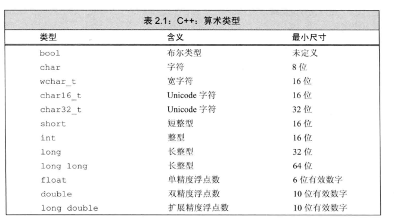

C++学习笔记
2024/12/18
Primer C++ 学习笔记
1. C++ 基本内置类型
1.1 算术类型（arithmetic type）
算术类型包括 整型 (intergral type,包括字符和布尔类型在内) ，和浮点型
除去布尔型和扩展的字符型之外 ， 其他整型可分为 signed （正，负，0）和 unsigned （只能表达大于等于0的数）
2.2 变量
对象（object）：一块能储存数据并且有某种类型的内存空间
初始化和赋值的区别 ： 初始化不等于赋值
2.2.2 变量声明（declaration）和定义（definition）的关系
1 | extern int i ; // 声明 i 并非定义 i |
声明是让名字为程序所知 ，定义是负责创建与名字关联的实体
Note ： 变量只能被 definition 一次，但是可以被多次被 declaration
2.2.3 标识符（identifier）
1 | int somename, someName, SomeName, SOMENAME |
- 类名一般用大写字母开头
- 变量名都用小写
- 多个单词合成的标识符需要有明显区分
2.2.4 名字的作用域
全局作用域 （global scope）: 一旦声明在整个程序范围内都可以使用
**块作用域 （block scope） **：局部作用域中使用
嵌套的作用域：
1. 内层作用域（inner scope）：
1. 外层作用域 （outer scope）
1 |
|
栗子：
1 | int i = 100, sum = 0; |
内层作用域定义的 i 不会影响外层作用域，所以最后print还是 100 ，45
2.3 复合类型
2.3.1引用 (reference)
引用（reference）是 C++ 提供的一种重要特性，它允许一个 变量起另一个名字，使得两个名字指向同一个内存地址。引用本质上是对某个对象的别名。
1 | int ival = 1024; // 定义一个整数变量 |
Note: 引用不是对象，只是别名
2.3.2 指针 （Pointer）
在 C++ 中，指针是一种特殊的变量，它用于存储其他对象的内存地址。指针与引用有一些相似之处，但也有显著的不同，比如指针可以为空（nullptr）、可以指向不同的对象，还可以执行算术运算。
获取对象的地址 & 利用指针访问对象
1 |
|
空指针
1 | double *pd = nullptr; |
void*指针
1 | void* obj = 3.14; |
void* 是一种特殊的指针，可以存放任何对象的地址